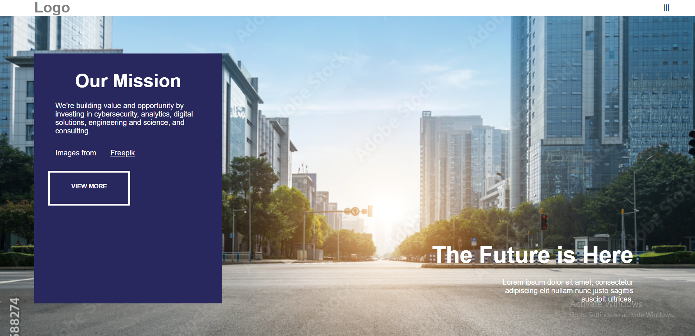
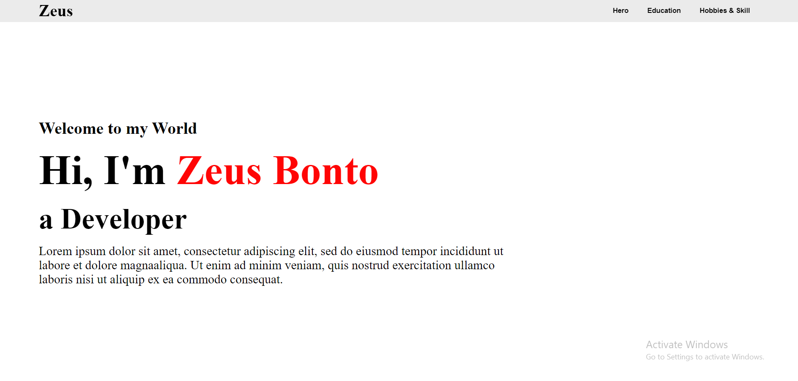
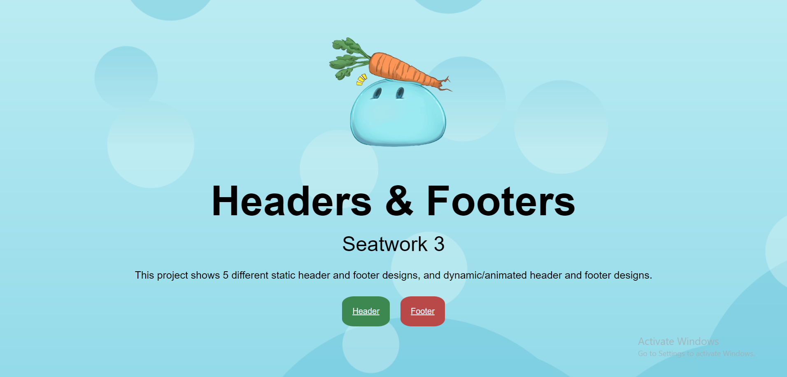
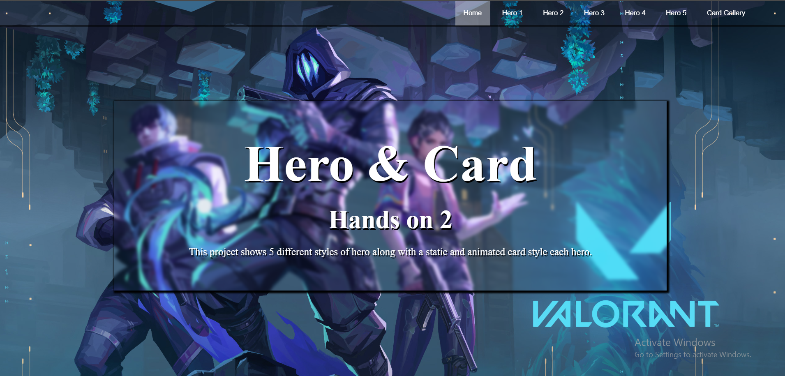
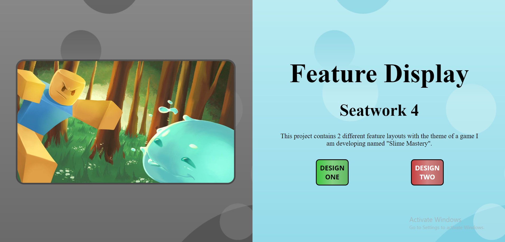

This is the first time we used vs code and github. This project is
where github and html are introduced to us.

Hands On 1
This is the first hands on project we made. The project is to recreate the
given website and copy the layouts the website have.

Seatwork 2
The first resume project I made. The activity is to select from
Pinterest/Behance or any website that provides a complete 1 page design
of website/landing page.

Seatwork 3
The header and footer project. The project is to create a Header and
Footer Display Website with distinct designs using pure HTML and CSS.

Hands On 2
The hero and card display project. The project is to create a Hero and
Card Display Website with distinct designs using pure HTML and CSS.

Seatwork 4
The feature display project where we made 2 different feature displays. The
project is to create a Features Display Website showcasing distinct design
layouts for different features using pure HTML and CSS.